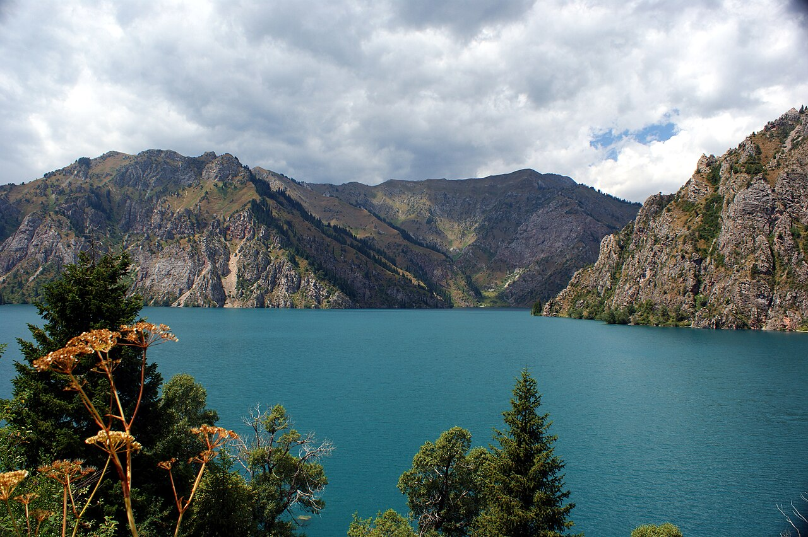

Кыргызстан очищает урановое наследие советской эпохи в Майлуу-Суу
Крупнейший в Центральной Азии участок уранового наследия содержит около 2 млн кубометров радиоактивных отходов. При гранте ЕБРР работы продлятся до 2032 года.

Кыргызстан очищает урановое наследие советской эпохи. Город Майлуу-Суу на горном юго-западе страны — крупнейший и самый сложный участок уранового наследия в Центральной Азии, где хранится около 2 млн кубометров радиоактивных хвостов.
Что за город Майлуу-Суу?
Майлуу-Суу — бывший урановый город в Джалал-Абадской области Кыргызстана (горный юго-запад). Он был основан в 1946 году и первоначально имел кодовое название «Почтовый ящик 200». Добыча и переработка урана прекратились в конце 1960-х годов.
Город находится примерно в 10 км от узбекской границы. В мае 2002 года сель перекрыл реку и создал угрозу для участка отходов. В 2023 году землетрясение в Турции и Сирии вызвало дополнительные проверки устойчивости.
Региональный план очистки
Региональный план очистки участков уранового наследия Центральной Азии начался в 2017 году. С тех пор из 7 приоритетных участков очищены 4:
- Мин-Куш и Шекафтар — Кыргызстан
- Чаркесар и Янгиабад — Узбекистан
- Истиклол/бывший Табошар — Таджикистан (частично завершён к 2023 году)
Участок Дегмай в Таджикистане пока не профинансирован — ему требуется около 42,9 млн евро.
Самый сложный участок
Майлуу-Суу — крупнейший и самый сложный участок, где хранится около 2 млн кубометров радиоактивных хвостов. Когда инженеры обнаружили хвосты внутри плотины, проект был изменён, а расходы выросли; отходы перемещают в более безопасные места.
Мы предлагали переселить людей, но они отказались. Дом есть дом.
— Рахманбек Тоичуев, ошский исследователь (The Times of Central Asia)
Данакан Примкулова, член женского комитета Майлуу-Суу, добавляет: «Вместо того чтобы бояться, мы стараемся что-то с этим сделать».
Финансирование
Работы финансируются через Счёт экологической реабилитации (ERA) ЕБРР для Центральной Азии. Грант ERA на 23 млн евро для Майлуу-Суу был подписан 16 мая 2023 года. Его подписали министр по чрезвычайным ситуациям Кыргызстана Бообек Ажикеев и директор Департамента ядерной безопасности ЕБРР Бальтазар Линдауэр.
Грант обеспечивает около семи лет работ по реабилитации и покрывает и стабилизирует 2 млн кубометров хвостов. Общая оценочная стоимость программы ЕБРР — около 113 млн евро; вклад ERA к концу 2025 года достиг примерно 70 млн евро.
Сроки
- Июль 2024 — работы по закрытию рудника в Майлуу-Суу завершены досрочно
- Июнь 2026 — Кыргызстан опубликовал предложение по единой системе мониторинга
- 2032 — ожидаемое общее завершение очистки
В цифрах
- Радиоактивные хвосты: около 2 млн м³
- Грант ERA ЕБРР: 23 млн евро (16 мая 2023)
- Очищено участков: 4/7
- Расстояние до границы: около 10 км
- Общая стоимость программы ЕБРР: около 113 млн евро
- Вклад ERA (к концу 2025): около 70 млн евро
- Дегмай (без финансирования): 42,9 млн евро
- Ожидаемое завершение: 2032 год